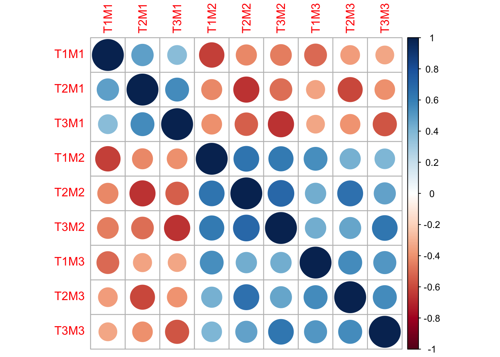

In the European Social Survey round 7, data have been collected on 28,221 European’s health (among many other topics). I have downloaded and recoded some of these data. You have them available in the R prompt as ess7_health.
This dataset has the following variables in it:
dshltgp : DISCUSSED HEALTH, LAST 12 MONTHS: GENERAL PRACTITIONER
dosprt : DO SPORTS OR OTHER PHYSICAL ACTIVITY, HOW MANY OF LAST 7 DAYS
alcfreq : HOW OFTEN DRINK ALCOHOL
etfruit : HOW OFTEN EAT FRUIT, EXCLUDING DRINKING JUICE
eatveg : HOW OFTEN EAT VEGETABLES OR SALAD, EXCLUDING POTATOES
health : SUBJECTIVE GENERAL HEALTH
happy : HOW HAPPY ARE YOU
slprl : SLEEP WAS RESTLESS, HOW OFTEN PAST WEEK
agea : Age
eisced : Education level
brncntr : BORN IN COUNTRY
smoke : Whether person currently smokes (recode of ESS variable CGTSMKE)
BMI : Body mass index (recode of ESS variables HEIGHT and WEIGHT)
health_problems : Number of health problems (recode of ESS variables HLTHPRxx)
You may want to copy-paste this list into a text file for future reference.
See the link above for the full questionnaire, and the ESS “variables and questions” Appendix for a full list of variables and their names and possible values.
Exercise 1.1
Check out the summary of ess7_health.
Solution
summary(ess7_health)
dshltgp dosprt alcfreq etfruit eatveg
Min. :1.00 Min. :0.0 Min. :1.00 Min. :1.00 Min. :1.00
1st Qu.:1.00 1st Qu.:1.0 1st Qu.:3.00 1st Qu.:2.00 1st Qu.:3.00
Median :2.00 Median :3.0 Median :4.00 Median :3.00 Median :3.00
Mean :1.74 Mean :3.3 Mean :4.22 Mean :3.15 Mean :3.13
3rd Qu.:2.00 3rd Qu.:6.0 3rd Qu.:6.00 3rd Qu.:4.00 3rd Qu.:4.00
Max. :2.00 Max. :7.0 Max. :7.00 Max. :7.00 Max. :7.00
NA's :242 NA's :165 NA's :31 NA's :34
health happy slprl agea eisced
Min. :0.00 Min. : 1.00 Min. :1.00 Min. : 14 Min. :2.00
1st Qu.:2.00 1st Qu.: 8.00 1st Qu.:1.00 1st Qu.: 34 1st Qu.:4.00
Median :3.00 Median : 9.00 Median :2.00 Median : 49 Median :5.00
Mean :2.86 Mean : 8.53 Mean :1.73 Mean : 49 Mean :4.97
3rd Qu.:3.00 3rd Qu.:10.00 3rd Qu.:2.00 3rd Qu.: 64 3rd Qu.:6.00
Max. :4.00 Max. :11.00 Max. :4.00 Max. :114 Max. :9.00
NA's :25 NA's :84 NA's :87 NA's :53 NA's :98
brncntr smoke BMI health_problems
Min. :1.00 Min. :0.000 Min. :0 Min. :1.1
1st Qu.:1.00 1st Qu.:0.000 1st Qu.:0 1st Qu.:1.1
Median :1.00 Median :0.000 Median :0 Median :1.1
Mean :1.11 Mean :0.237 Mean :0 Mean :1.1
3rd Qu.:1.00 3rd Qu.:0.000 3rd Qu.:0 3rd Qu.:1.2
Max. :2.00 Max. :1.000 Max. :0 Max. :1.7
NA's :11 NA's :789 NA's :2051
Criterion correlations
In this exercise, you will start by reproducing the “criterion correlations” for discussing your health with a general practiction (GP) from the slides. Then you will look at other variables in the dataset.
Correlate health discussion with the GP with the following variables: doing sports, sleeping problems, body-mass index, and age. Check this gives the same result as in the slides
Look at more “criterion” variables: eating fruit and vegetables, happiness, education level, and being born in the country of residence
Do the correlations you find agree with the expectations of the “nomological net” around “visiting the GP”?
I need a hint!
You can look at correlations with additional variables by adding these to the select statement
Remember R code is cAsE SENSITIVE and check for any typos (note most variable names here are in lower case)
If you need to know more about the variables, check out the Appendix linked above
Check that the code provided to output only the correlations with GP, in alphabetical order, is used for both parts
A starting point for the code is below.
# ess7_health is available in your workspace# Correlate discussing health with GP with the following variables: # doing sports, sleeping problems, body-mass index, and age# (the argument "pairwise.complete.obs" for the `cor` function # deletes missing values for each pair of variables)criterion_slides <- ess7_health %>% dplyr::select(dshltgp, dosprt, <complete this>) %>%cor(use ="pairwise.complete.obs")# To make it easier to check your answer, # sort by name and output only correlations with GP: criterion_slides <- criterion_slides["dshltgp", sort(colnames(criterion_slides)[-1])] criterion_slides# Now correlate with eating fruit and vegetables, happiness, # education level, and being born in the country of residence# And assign the result to criterion_extracriterion_extra <-<complete this># To make it easier to check your answer, # sort by name and output only correlations with GP: criterion_extra <- criterion_extra["dshltgp", sort(colnames(criterion_extra)[-1])] criterion_extra
Solution
# Correlate discussing health with GP with the following variables: doing sports, age, sleeping problems, and body-mass indexcriterion_slides <- ess7_health %>%select(dshltgp, dosprt, agea, slprl, BMI) %>%cor(use ="pairwise.complete.obs") criterion_slides <- criterion_slides["dshltgp",sort(colnames(criterion_slides)[-1])] criterion_slides
# Correlate with eating fruit and vegetables, happiness, eduction level, and being born in the country of residencecriterion_extra <- ess7_health %>%select(dshltgp, etfruit, eatveg, happy, eisced, brncntr) %>%cor(use ="pairwise.complete.obs")criterion_extra <- criterion_extra["dshltgp",sort(colnames(criterion_extra)[-1])] criterion_extra
Looking at the criterion correlations, one of them is close to zero. To which variable does this correlation correspond?
Solution
Answer: “Born in country” has a correlation close to zero with GP visits.
It is also not clear what we would have expected here. Maybe immigrants are unhealthier and need more treatment (negative association), or maye they are less able to find their way to the GP (positive association).
Exercise 1.4
What can we conclude from the fact that the criterion correlation with “born in country” is so small?
Choose one:
A. The validity of this question is low
B. The reliability of this question is low
C. The criterion variable has low validity
D. Nothing
I need a hint!
Think back to the disadvantages of criterion validity from the slides.
Solution
The answer is D: nothing. It just doesn’t really help to know this at all.
Internal consistency with factor analysis
As explained in the lectures, when there are no repeated measures of the same question, we can use repeated measures of the same concept to get at the “internal consistency”.
This code uses the cfa function from the lavaan library, which is very flexible. The model syntax is relatively easy to read: in this example, we only need to define which variables are regressed on the latent variable (concept) health_latent. This is done by using the =~ operator, which means “is measured by”.
Note that the results here may be different from those in the slides.
If you would like to learn more on doing confirmatory factor analysis in R using lavaan, the tutorial at http://lavaan.ugent.be/tutorial/cfa.html is a good place to start. I can also recommend the book by Beaujean (see here) with accompanying R code.
Exercise 1.5
Estimate the internal consistency coefficient of “discussing health with GP” based on the same three indicators as in the slides: GP, self-rated health, and sleeping problems.
Change the code to also use the number of reported health problems as an indicator
I need a hint!
Here is some sample code you can adapt to your needs.
library(lavaan)# Use the cfa function from the lavaan package to fit a # confirmatory factor analysis (CFA) model that gives the # internal consistency coefficients as "standardized loadings" (or "coefficients") # The latent concept "health_latent" is posited to be # the common cause of these three variables ("indicators")model <-"health_latent =~ dshltgp + health + slprl"# Fit the model in lavaan and assign the result to a variablefit <-cfa(model, data = ess7_health)# Print the output of the CFA # standardized loadings will be the consistency coefficients summary(fit, standardized =TRUE)# A different way of getting at these is:consistencies <-standardizedSolution(fit) %>%filter(op =="=~")consistencies# Change the analysis so health_problems is also included as an indicator.
Solution
# Use the cfa function from the lavaan package to fit a # confirmatory factor analysis (CFA) model that gives the # internal consistency coefficients as "standardized loadings" (or "coefficients") # The latent concept "health_latent" is posited to be # the common cause of these three variables ("indicators")model <-"health_latent =~ dshltgp + health + slprl + health_problems"# Fit the model in lavaan and assign the result to a variablefit <-cfa(model, data = ess7_health)# Print the output of the CFA # standardized loadings will be the consistency coefficients summary(fit, standardized =TRUE)
lavaan 0.6.15 ended normally after 28 iterations
Estimator ML
Optimization method NLMINB
Number of model parameters 8
Used Total
Number of observations 26073 28221
Model Test User Model:
Test statistic 15.754
Degrees of freedom 2
P-value (Chi-square) 0.000
Parameter Estimates:
Standard errors Standard
Information Expected
Information saturated (h1) model Structured
Latent Variables:
Estimate Std.Err z-value P(>|z|) Std.lv Std.all
health_latent =~
dshltgp 1.000 0.121 0.278
health -4.796 0.145 -33.009 0.000 -0.581 -0.664
slprl 2.978 0.096 31.158 0.000 0.361 0.432
health_problms 0.505 0.015 33.161 0.000 0.061 0.639
Variances:
Estimate Std.Err z-value P(>|z|) Std.lv Std.all
.dshltgp 0.175 0.002 108.734 0.000 0.175 0.923
.health 0.428 0.008 55.508 0.000 0.428 0.559
.slprl 0.566 0.006 98.779 0.000 0.566 0.813
.health_problms 0.005 0.000 61.084 0.000 0.005 0.592
health_latent 0.015 0.001 18.197 0.000 1.000 1.000
# A different way of getting at these is:consistencies <-standardizedSolution(fit) %>%filter(op =="=~")consistencies
List the assumptions necessary to be able interpret the Std.all coefficients as the “internal consistency” of the items.
Why is one of the coefficients of an opposite sign to the others?
Assuming the assumptions all hold, which item is the best measure of the underlying latent construct?
Solution
The assumptions are:
No correlated error
True scores all measure same construct
No differential error
Because three of the indicators indicate bad health, while one (health) indicates good health.
The indicator health. The indicator health_problems is very close in quality as an indicator of the LV.
Exercise 1.7
After an additional indicator was used to measure the latent concept “health_latent”, the internal consistency estimate for “GP” changed. What could be the explanation?
A. Sampling fluctuations
B. Violation of assumptions
C. Both sampling and assumption violations
D. None of the above
Solution
If the model is true (so no assumptions are violated) and there is infinite data, using more indicators will not change the consistency estimate. So either sampling or assumption violations can cause this change (Answer C).
Multitrait-multimethod models
The correlations between the variables measured in the multitrait-multimethod (MTMM) experiment from the slides from Saris & Gallhofer are plotted below (the matrix itself will be called R here).
The “correlation plot” below shows these as larger or smaller circles. The larger the circle, the stronger the correlation (positive or negative).

Click here to show correlations in a table
T1M1
T2M1
T3M1
T1M2
T2M2
T3M2
T1M3
T2M3
T3M3
T1M1
1.000
0.481
0.373
-0.626
-0.429
-0.453
-0.502
-0.370
-0.336
T2M1
0.481
1.000
0.552
-0.422
-0.663
-0.495
-0.347
-0.608
-0.406
T3M1
0.373
0.552
1.000
-0.410
-0.532
-0.669
-0.332
-0.399
-0.566
T1M2
-0.626
-0.422
-0.410
1.000
0.642
0.612
0.548
0.429
0.406
T2M2
-0.429
-0.663
-0.532
0.642
1.000
0.693
0.436
0.653
0.471
T3M2
-0.453
-0.495
-0.669
0.612
0.693
1.000
0.438
0.466
0.638
T1M3
-0.502
-0.347
-0.332
0.548
0.436
0.438
1.000
0.556
0.514
T2M3
-0.370
-0.608
-0.399
0.429
0.653
0.466
0.556
1.000
0.558
T3M3
-0.336
-0.406
-0.566
0.406
0.471
0.638
0.514
0.558
1.000
The variables have been renamed to show which “trait” (survey question) and “method” (way of asking the question) they correspond to. For example, T1M1 might refer to “satisfaction with the economy” (T1) measured on a four point scale (M1), and T1M2 to “satisfaction with the economy” (T1) measured on an eleven point scale (M2).
Exercise 1.8
Which correlations from the MTMM experiment are strongest?
A. Those between different questions measured in the same way ("heterotrait-monomethod")
B. Those between the same questions measured in different ways ("monotrait-heteromethod")
C. Those between different questions measured in different ways ("heteromethod-heterotrait")
D. All the correlations are the same
I need a hint!
Try to find the different groups of correlations mentioned in the picture. Which group has the largest circles overall?
Solution
Answer: B. Those between the same questions measured in different ways (“monotrait-heteromethod”)
This seems like a good thing. This classification of groups of correlations is due to Campbell and Fiske (1959), who based their assessment of the measurement properties purely on the type of consideration you have just done.
Exercise 1.9
MTMM models can be applied to MTMM data to obtain estimates of the reliability coefficients and method effects.
Since the MTMM design crosses “traits” (survey questions in our case) with “methods” (ways of asking those questions), this is a matter of specifying the right indicator for each factor in a factor analysis.
This time, due to the study design, the interpretation of the standardized factor loadings is that they represent “reliability coefficients” and “method effects” of the questions studied.
Formulate the MTMM model for the correlations in the MTMM correlation matrix R by replacing the ... dots in the code below;
Run the model to obtain estimates using the ready-made code;
Interpret the results by looking at the standardized estimates.
HINT: The standardized coefficients on the T* factors are the reliability coefficient estimates; The standardized coefficients on the M* factors are the method effect estimates.
Ready-made code for MTMM model
Adjust the code below to answer the questions above.
library(lavaan)library(dplyr)# Show the correlation matrix:R# Define the MTMM model below (see slides)model <-" # Fill in the measurement of the traits and methods. # Note that the names are T1M1, T1M2, etc. # Model for the methods: prefix every variable with 1*, # e.g use M1 =~ 1*T1M1 + ... M1 =~ ... # Replace the dots M2 =~ ... M3 =~ ... # Model for the traits: don't prefix indicators with anything T1 =~ ... T2 =~ ... T3 =~ ... # This specifies that the traits correlate. You can leave it as-is T1 ~~ T2 + T3 T2 ~~ T3 # This identifies the latent trait variables by # standardizing them to variance 1. You can leave it as-is. T1 ~~ 1*T1 T2 ~~ 1*T2 T3 ~~ 1*T3"# Fit the model as a CFA using lavaanfit <-lavaan(model, sample.cov = R, sample.nobs =424, auto.cov.lv.x =FALSE, auto.fix.first =FALSE, auto.var =TRUE)# Summarize the resultssummary(fit, standardize =TRUE)# The standardized loadings (those with op "=~") are # the reliability coefficients (for Tx) # and method effects (for Mx):std_estimates <-standardizedSolution(fit) %>% dplyr::filter(op =="=~") %>% dplyr::arrange(lhs, rhs)std_estimates
I need a hint!
Use the names of the variables: “T1M1” belongs to trait factor T1 and method factor M1, for instance
Make sure the method indicators each have their loading set to 1 by using the 1* suggested
Make sure the original code for the model is not accidentally removed: only change the dots.
If you managed to get this, excellent job! MTMM modeling can be quite confusing, especially at the beginning. With practice it will become more natural, and can be a powerful tool in your measurement error arsenal.
Quasi-simplex model
These models can be used to estimate the measurement error variance in longitudinal data. Such data are available from the LISS panel.
In the slides, error estimation in “internet use” using three timepoints (years 2008-2010) is explained. In the dataset, which is included in the lavaan.survey package as liss, a fourth timepoint, 2011, is also available (cs11d247). Adjust the model to the right to include cs11d247 so it also estimates the reliability in 2011.
The full study documentation as well as the raw data are publicly available at http://www.lissdata.nl/dataarchive/study_units/view/6. (BTW: LISS is an awesome publicly available longitudinal data source you should definitely check out if you’re ever looking for high-quality social science data)